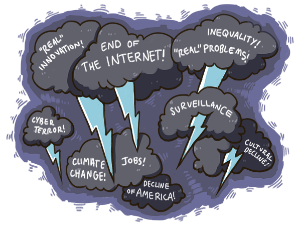

The Future in the Rear-View Mirror
So far, we have tried to convey a visceral sense of what is essentially an uneven global condition of explosive positive change. Change that is progressing at all levels from individual to business to communities to the global societal order. Perhaps most important part of the change is that we are experiencing a systematic substitution of intelligence for brute authoritarian power in problem solving, allowing a condition of vastly increased pluralism to emerge.
Paradoxically, due to the roots of vocal elite discontent in pastoral sensibilities, this analysis is valid only to the extent that it feels viscerally wrong. And going by the headlines of the past few years, it certainly does.

Much of our collective sense of looming chaos and paradises being lost is in fact a clear and unambiguous sign of positive change in the world. By this model, if our current collective experience of the human condition felt utopian, with cultural elites extolling its virtues, we should be very worried indeed. Societies that present a facade of superficial pastoral harmony, as in the movie Stepford Wives, tend to be sustained by authoritarian, non-pluralistic polities, hidden demons, and invisible violence.
Innovation can in fact be defined as ongoing moral progress achieved by driving directly towards the regimes of greatest moral ambiguity, where our collective demons lurk. These are also the regimes where technology finds its maximal expressions, and it is no accident that the two coincide. Genuine progress feels like onrushing obscenity and profanity, and also requires new technological capabilities to drive it.
The subjective psychological feel of this evolutionary process is what Marshall McLuhan described in terms of a rear-view mirror effect: "we see the world through a rear-view mirror. We march backwards into the future."
Our aesthetic and moral sensibilities are oriented by default towards romanticized memories of paradises lost. Indeed, this is the only way we can enter the future. Our constantly pastoralizing view of the world, grounded in the past, is the only one we have. The future, glimpsed only through a small rear-view mirror, is necessarily framed by the past. To extend McLuhan's metaphor, the great temptation is to slam on the brakes and shift from what seems like reverse gear into forward gear. The paradox of progress is that what seems like the path forward is in fact the reactionary path of retreat. What seems like the direction of decline is in fact the path forward.
Today, our collective rear-view mirror is packed with seeming profanity, in the form of multiple paths of descent into hell. Among the major ones that occupy our minds are the following:- Technological Unemployment: The debate around technological unemployment and the concern that "this time it is different" with AI and robots "eating all the jobs."
- Inequality: The rising concern around persistent inequality and the fear that software, unlike previous technologies, does not offer much opportunity outside of an emerging intellectual elite of programmers and financiers.
- "Real" Problems: The idea that "real" problems such as climate change, collapsing biodiversity, healthcare, water scarcity and energy security are being neglected, while talent and energy are being frivolously expended on "trivial" photo-sharing apps.
- "Real" Innovation: The idea that "real" innovation in areas such as space exploration, flying cars and jetpacks has stagnated.
- National Competitiveness: The idea that software eating the world threatens national competitiveness based on manufacturing prowess and student performance on standardized tests.
- Cultural Decline: The idea that social networks, and seemingly "low-quality" new media and online education are destroying intellectual culture.
- Cybersecurity: The concern that vast new powers of repression are being gained by authoritarian forces, threatening freedom everywhere: Surveillance and cyberwarfare technologies (the latter ranging from worms like Stuxnet created by intelligence agencies, to drone strikes) beyond the reach of average citizens.
- The End of the Internet: The concern that new developments due to commercial interests pose a deep and existential threat to the freedoms and possibilities that we have come to associate with the Internet.
It was the best of times, it was the worst of times, it was the age of wisdom, it was the age of foolishness, it was the epoch of belief, it was the epoch of incredulity, it was the season of Light, it was the season of Darkness, it was the spring of hope, it was the winter of despair, we had everything before us, we had nothing before us, we were all going direct to Heaven, we were all going direct the other way - in short, the period was so far like the present period, that some of its noisiest authorities insisted on its being received, for good or for evil, in the superlative degree of comparison only.Such a state of confused urgency often leads to hasty and ill-conceived grand pastoralist schemes by way of the well-known politician's syllogism:1
Something must be donePromethean sensibilities suggest that the right response to the sense of urgency is not the politician's syllogism, but counter-intuitive courses of action: driving straight into the very uncertainties the ambiguous problem statements frame. Often, when only reactionary pastoralist paths are under consideration, this means doing nothing, and allowing events to follow a natural course.This is something
This must be done
In other words, our basic answer to the non-question of "inequality, surveillance and everything" is this: the best way through it is through it. It is an answer similar in spirit to the stoic principle that "the obstacle is the way" and the Finnish concept of sisu: meeting adversity head-on by cultivating a capacity for managing stress, rather than figuring out schemes to get around it. Seemingly easier paths, as the twentieth century's utopian experiments showed, create a great deal more pain in the long run.

Broken though they might seem, the mechanisms we need for working through "inequality, surveillance and everything" are the generative, pluralist ones we have been refining over the last century: liberal democracy, innovation, entrepreneurship, functional markets and the most thoughtful and limited new institutions we can design.
This answer will strike many as deeply unsatisfactory and perhaps even callous. Yet, time and again, when the world has been faced with seemingly impossible problems, these mechanisms have delivered.
Beyond doing the utmost possible to shield those most exposed to, and least capable of enduring, the material pain of change, it is crucial to limit ourselves and avoid the temptation of reactionary paths suggested by utopian or dystopian visions, especially those that appear in futurist guises. The idea that forward is backward and sacred is profane will never feel natural or intuitive, but innovation and progress depend on acting by these ideas anyway.
In the remaining essays in this series, we will explore what it means to act by these ideas.
[1] The Politician's Syllogism was first identified in the BBC sitcom, Yes Prime Minister.